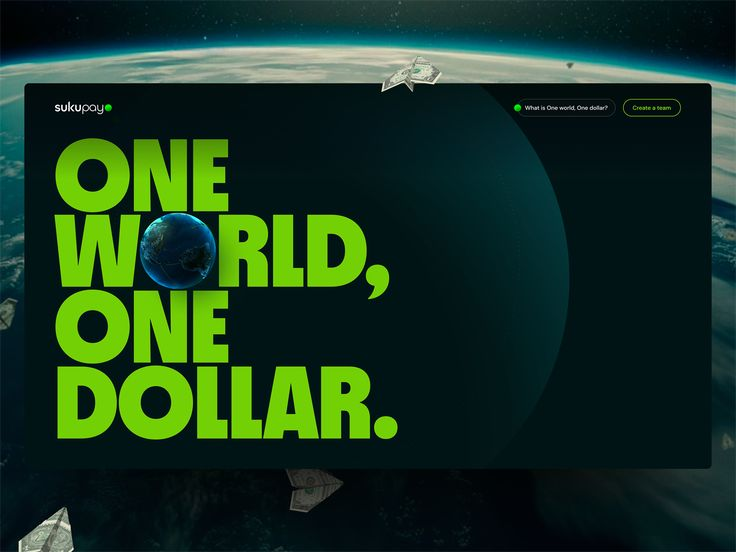
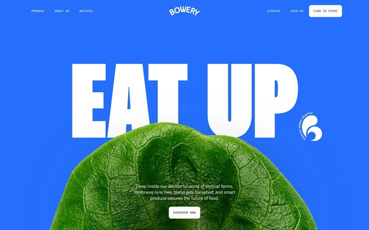
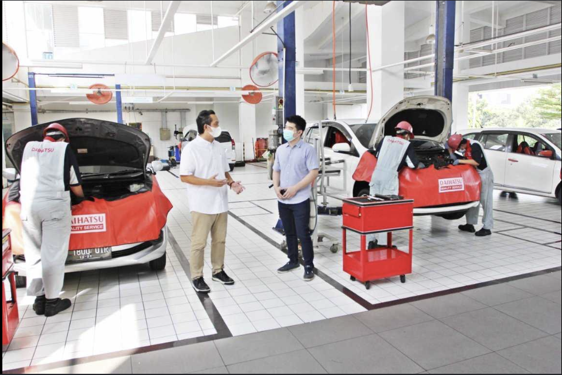
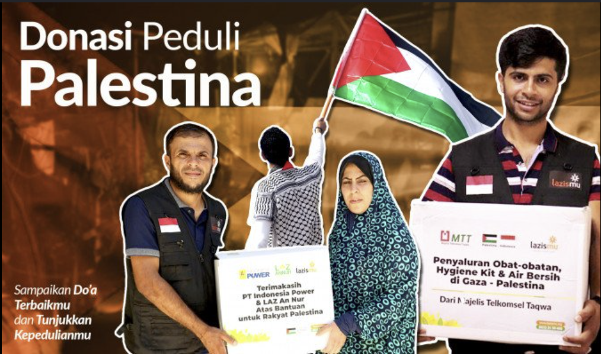

Howdy Fellar😀, I am
Azka Jimmie VirendraSoftware Engineer IDN Boarding School Solo
This portfolio showcases my projects and contributions as a developer in the
technology sector.

About Me


I was born in Surabaya, but I lived and grew up on an island nicknamed the "Mexico of Indonesia"(Madura). My hobbies are drawing, reading, and sports. My favorite food is "martabak telur" (savory egg-filled pancake).
Portfolio


Here is my portfolio from my time working as a software engineer. I have developed e-commerce websites, the official website for Core-TaxPro, and more. I have also contributed to a website project for the organization Lazismu.
Education


I have completed my education at IDN Boarding School Solo, where I studied programming, database management, and web development. I also participated in school activities that hadn't existed before, such as IDN Tangguh, Backpacker, and so on.
Experience


My experience includes participating in the production of the latest vehicle model at Astra Daihatsu. I have also contributed to distributing donations to Palestine, an experience through which I embraced the values of kindness and helping others.
Contact
Holler at me !


I am a graduate of